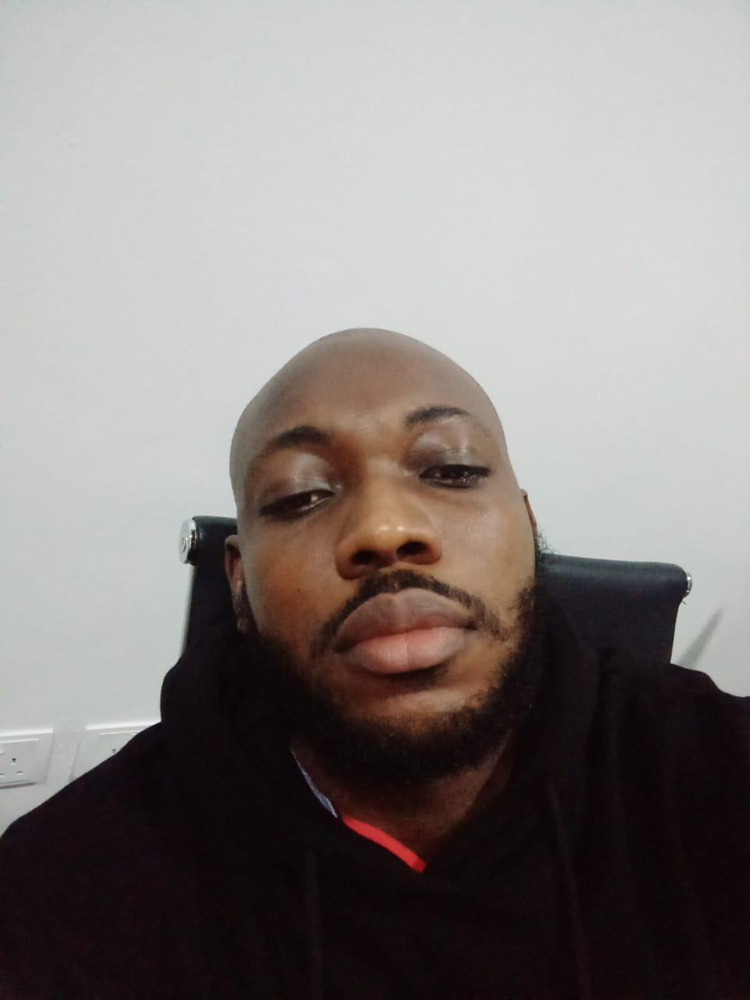

Hello Ayomide
Major headings for the links

In this course we’re going to dig deeper into both HTML and CSS. Our foundations lessons, by design, only scratched the surface of what’s possible. We wanted to give you all of the bare necessities for getting started so you could move on and
be somewhat productive as quickly as possible, but now it’s time to slow down and dig in! You have probably realized by now that there are many more HTML elements than we mentioned in our foundations content. Throughout this course we’ll be
hitting the rest of the important elements such as forms, tables and semantic elements such as headers, footers, sections, and asides. There is also a lot more that you can do with CSS that you’ll learn throughout this course, such as variables
and functions, shadows, animation and of course grid layouts! So buckle up! By the time you finish this course you’ll be able to recreate just about any web design you can find on the internet… which is an important skill to carry forward.
Even if you are not shooting for a front-end specific job, being able to make your portfolio pieces look nice is important when it comes to making yourself stand out.
Section 1
coup d'état began on 15 January 1966, when mutinous Nigerian soldiers led by Chukwuma Kaduna Nzeogwu and Emmanuel Ifeajuna killed 22 people[4] including the Prime Minister of Nigeria, many senior politicians, many senior Army officers (including
their wives), and sentinels on protective duty.[5][6] The coup plotters attacked the cities of Kaduna, Ibadan, and Lagos while also blockading the Niger and Benue River within a two-day span of time before the coup plotters were subdued. The
General Officer Commanding the Nigerian Army, Johnson Aguiyi-Ironsi, was compelled to take control of the government of a country in upheaval, inadvertently putting Nigeria's nascent democracy on hold.[7] His ascendancy to power was deemed
a conspiracy by the coup plotters, who were mainly Igbo officers, to pave the way for General Aguiyi-Ironsi to be Head of State of Nigeria. Consequently, the retaliatory events by Northern members of the Nigerian Army that led to deaths of
many innocent Igbo soldiers and civilians caused the Nigerian Civil War.[citation needed] Contents 1 Background 2 Coup 3 Aftermath 4 Casualties 4.1 Civilians 4.2 Military and police 5 References Background In August 1965 a group of Army majors
(Emmanuel Ifeajuna, Timothy Onwuatuegwu, Chris Anuforo, Don Okafor, Humphrey Chukwuka, and Adewale Ademoyega) began plotting a coup d'état against incumbent Prime Minister Abubakar Balewa.[8] The coup was planned because according to the majors,
the men at the helm of affairs were running Nigeria aground with their corrupt ways. Ministers under them were living flamboyant lifestyles and looting public funds at the expense of ordinary citizens.[citation needed] The president of Nigeria,
Nnamdi Azikiwe left the country in late 1965, first for Europe, then on a cruise to the Caribbean. Under the law, the Senate president, Nwafor Orizu, became acting president during his absence and assumed all the powers of the office.

In this course we’re going to dig deeper into both HTML and CSS. Our foundations lessons, by design, only scratched the surface of what’s possible. We wanted to give you all of the bare necessities for getting started so you could move on
and be somewhat productive as quickly as possible, but now it's time to slow down and dig in! You have probably realized by now that there are many more HTML elements than we mentioned in our foundations content. Throughout this course
we’ll be hitting the rest of the important elements such as forms, tables and semantic elements such as headers, footers, sections, and asides. There is also a lot more that you can do with CSS that you’ll learn throughout this course,
such as variables and functions, shadows, animation and of course grid layouts! So buckle up! By the time you finish this course you’ll be able to recreate just about any web design you can find on the internet… which is an important skill
to carry forward. Even if you are not shooting for a front-end specific job, being able to make your portfolio pieces look nice is important when it comes to making yourself stand out.
Section 2
[9] Coup In the morning of 15 January 1966, at a meeting with some local journalists in Kaduna seeking to find out what was going on, it was brought to Major Nzeogwu's attention that the only information about the events then was
what was being broadcast by the BBC.[8] Nzeogwu was surprised because he had expected a radio broadcast of the rebels from Lagos. He is said to have "gone wild" when he learnt that Emmanuel Ifeajuna in Lagos had not made any plans whatsoever to
neutralize Johnson Aguiyi-Ironsi who was the Commander of the Army. Therefore, Nzeogwu hurriedly drafted a speech which was broadcast on Radio Kaduna sometime around 12 a.m. and in which he declared martial law over the Northern Provinces of Nigeria.[10][11]
Aftermath Acting President Nwafor Orizu made a nationwide broadcast, after he had briefed President Nnamdi Azikiwe on the phone about the decision of the cabinet, announcing the cabinet's "voluntary" decision to transfer power to the armed forces.[citation
needed] Major General Johnson Aguiyi-Ironsi then made his own broadcast, accepting the "invitation".
On 17 January, Major General Ironsi established the Supreme Military Council in Lagos and effectively suspended the constitution.[3] Casualties Regarding the casualties, the coup conspirators claimed their purge post-coup targeted members or supporters
of the anterior regime and had been targeted for purely political reasons instead of being a racial purge focused on certain ethnic groups or clans; furthermore, they also claimed the list of people targeted was small and composed of only
8 people, half of them foreigners who were to be arrested not killed, and that the casualties had occurred as collateral damage of the coup. These claims were clarified by a member of the trio that formed the coup, Adewale Ademoyega, who published
them in Nigeria in 1981 in a book titled Why We Struck outlining their reasons and motivations[12] in which he mentioned: " There was no decision at our meeting to single out any ethnic group for elimination. Our intentions were honourable,
our views were national and our goals were idealistic. Even those earmarked for arrest, four were northerners, two were Westerners and two were Easterners. " Below is a comprehensive list of casualties from the coup.[4] Civilians Prime Minister
Abubakar Tafawa Balewa Premier Ahmadu Bello Premier Samuel Ladoke Akintola Finance Minister Festus Okotie-Eboh Ahmed Ben Musa (Bello's Senior Assistant Secretary for Security)[13] Hafsatu Bello Mrs Latifat Ademulegun Zarumi Sardauna Ahmed
Pategi (Bello's driver)[13] Military and police Brig. Samuel Ademulegun Brig. Zakariya Maimalari Col. Ralph Shodeinde[14] Col. Kur Mohammed [15] Lt. Col. Abogo Largema[15] Lt. Col. James Pam[15] Lt. Col. Arthur Unegbe Sergeant Daramola Oyegoke
(assisted Nzeogwu in the attack on the Sardauna's lodge and according to the police report was murdered by Nzeogwu)[5][6] PC Yohana Garkawa Lance Corporal Musa Nimzo PC Akpan Anduka PC Hagai Lai Philip Lewande